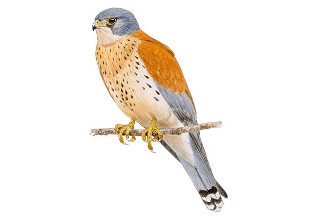

En Murcia, el núcleo más importante se localiza en el Noroeste.
Se localiza principalmente en zonas de campo abierto de cultivos herbáceos de secano y zonas improductivas. Evita zonas arboladas.
El más pequeño de nuestros halcones fue, hasta mediados del pasado siglo, un habitante frecuente de torres, cortijos, casonas, palacios y castillos situados en regiones dedicadas a la agricultura y la ganadería extensivas, en las que podía encontrar abundantes invertebrados con los que alimentarse. Las transformaciones sufridas por el campo español en las últimas décadas mermaron su hábitat y ocasionaron un acusado declive, aunque en los últimos años la situación de la especie parece haberse estabilizado tras verse favorecida por numerosas iniciativas y planes de conservación.
